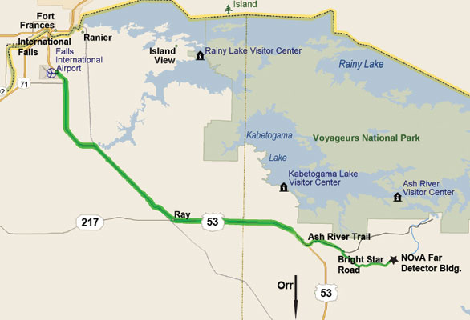

Directions to NOvA Celebration
From International Falls:
Take Highway 53 South for 27 miles past the airport and turn left on to the Ash River Trail (County Rd 129). Follow the Ash River Trail for 5.5 miles. Take Bright Star Road on the right and follow it for 3.5 miles to the building.
From Orr:
Follow Highway 53 North for 26 miles and turn right on to the Ash River Trail (County Rd 129). IFollow the Ash River Trail for 5.5 miles. Take Bright Star Road on the right and follow it for 3.5 miles to the building.
Travel Times:
- Duluth Airport: 137 miles or 2.5 Hours
- Minneapolis/St. Paul Airport: 277 miles or 4.5-5 hours
- Fermilab: 602 miles or 9.5 to 10 hours
- From International Falls: 36 miles or 45 minutes
- From Orr: 35 miles or 45 minutes